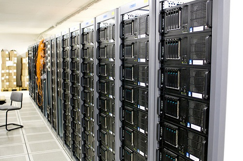
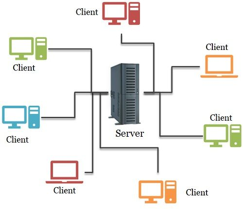

What is a server? (In brief)
The Server (In programming) is Software or Special computer processing customer inquiries in a Net.
There are several types of Servers in total. Here are some types:
- Web Servers (Apache, Nginx)
- Database Servers (PostgreSQL, MySQL)
- File Servers (FTP, SMB)
- Mail Servers (Postfix, Exim)
More about Server Types
- Web Server:
- is like a digital waiter. It takes your request (URL), goes to the kitchen (storage), and brings you back a plate with a website.
- Database Server:
- is a giant digital warehouse. It stores millions of rows of data and speaks
SQL. - Application Server:
- is the
brain
. It calculates logic and connects the Waiter with the Warehouse.

Server Hardware
Server Hardware consists of physical components designed for high-performance and reliability.
CPU:- High-core-count processors (e.g., Intel Xeon, AMD EPYC).
RAM:- Large capacities of ECC memory to prevent corruption.
Storage:- RAID-configured HDDs or NVMe SSDs.

Server Comparison
| Web vs Database Server Comparison | ||
|---|---|---|
| Name Server | Database | Web |
| Primary Goal | Securely store and manage data. | Make information accessible over the internet. |
| Popularity | Focused Platforms | Global Reach |